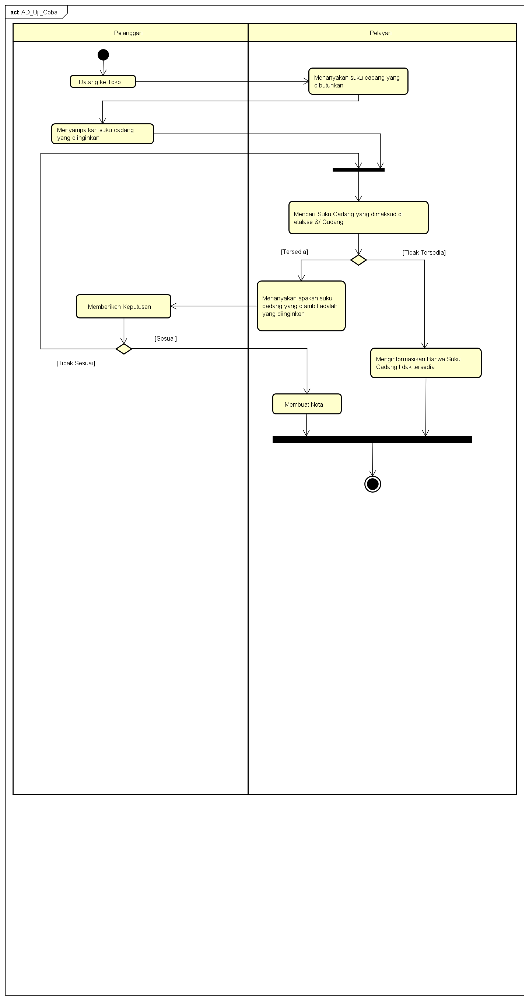

NIM : 1811500013
Nama : Abang Sayyaf Dzulfiqar
Kelompok : TI6J
Hasil Saya menyadur Pertemuan Ke-2:
1) Perhitungan nilai kehadiran cukup membuat file index.html di setiap pertemuan dan di tandai sesuai directory github Cth:(sadurrpl/2/index.html)
2) Perhitungan tugas, dinilai dari kualitas konten file index.html yang saya sadur
3) Materi pertemuan ke-2 di sini pengajar menyampaikan kepada mahasiswa tentang apa itu activity diagram
Activity diagram Diagram aktivitas adalah bentuk visual dari alir kerja yang berisi aktivitas dan tindakan,
yang juga dapat berisi pilihan, pengulangan, dan concurrency.
Dalam Unified Modeling Language, diagram aktivitas dibuat untuk menjelaskan aktivitas komputer maupun alur aktivitas dalam organisasi.(Source : wikipedia)
4) Membuat Activity Diagram menggunakan astah , AD diberikan nama AD Berjalan
5) Dosen Pengajar menjelaskan langkah" dalam membuat diagram activity menggunakan astah berdasarkan Laporan KP yang ada.
6) Membuat diagram activity sesuai contoh sebagai latihan awal dalam pembuatan diagram activity
7) Melampirkan hasil
Lampiran Hasil File Project Astah Download
